傅立葉表示法
a1cos(w1t)LTI Systemmagnitude changeα1cos(frequencyw1t+phase shiftβ1)
把一組 sinusoid 訊號丟進LTI系統後，magnitude, phase 改變，frequency 不變
頻率響應
頻率響應（英語：Frequency response，簡稱頻響）是當向電子儀器系統輸入一個振幅不變，頻率變化的信號時，測量系統相對輸出端的響應。通常與電子放大器、擴音器等聯繫在一起，頻響的主要特性可用系統響應的幅度（用分貝）和相位（用弧度）來表示。-- wiki
Discrete-time
若輸入訊號 x[n]=ejΩn (unit amplitude complex sinusoidal)
y[n]=k=−∞∑∞h[k]x[n−k]=k=−∞∑∞h[k]ejΩ(n−k)=x[n]ejΩnk=−∞∑∞h[k]e−jΩk=ejΩnfrequency responseH(ejΩ)=ejΩnmagnitude∣H(ejΩ)∣phaseej∠H(ejΩ)
H(ejΩ) 是在強調 H(jΩ) 的週期為 2π
H(ejΩ)=∑k=−∞∞h[k]e−jΩk
H(ej(Ω+2π))=∑k=−∞∞h[k]e−j(Ω+2π)k=∑k=−∞∞h[k]e−jΩke−j2πk=H(ejΩ)
H(ejΩ)=k=−∞∑∞h[k]e−jΩk
Continuous-time
H(jw)=∫−∞∞h(τ)e−jwτdτ
過程類似，換成積分而已
y(t)=∫−∞∞h(τ)ejw(t−τ)dτ=ejwt∫−∞∞h(τ)e−jwτdτ=ejwtH(jw)
H(jw)=∣H(jw)∣ej∠H(jw)
Magnitude response (αi) : ∣H(jw)∣
Phase response (βi) : ej∠H(jw)
Example - RC Circuit
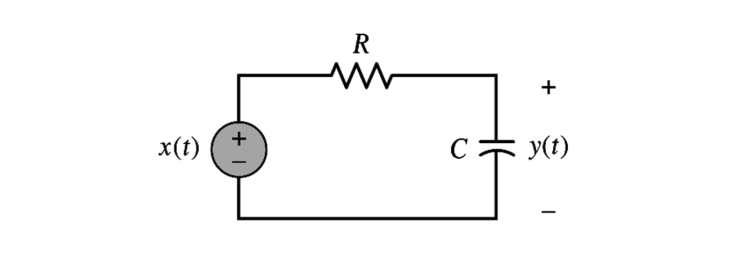
Impulse response: h(t)=RC1e−RCtu(t)
Frequency response: H(jw)=RC1∫∞∞e−RCτu(τ)e−jwτdτ=RC1∫0∞e−(jw+RC1)τdτ=jw+RC1RC1
Magnitude response: ∣H(jw)∣=w2+(RC1)2RC1
Phase response: ∠H(jw)=tan−1(wRC)
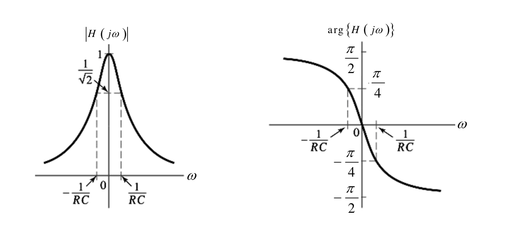
訊號表示法
如果我們把訊號用 M 個 complex sinusoids 加起來表示：
x(t)=k=1∑Makejwkt
ak 為 ejwkt 在頻率為 wk 時的強度：
ak=X(jwk)
把 x(t) 丟進LTI系統中：
k=1∑MakejwktH(jw)k=1∑MY(jwk)akH(jwk)ejwkt
可以觀察到如果在時域丟到系統後要做 convolution：
y(t)=x(t)∗h(t)
在頻域中就可以直接用相乘的：
Y(jwk)=X(jwk)H(jwk)
基底與投影
基底
定義：給定一個向量空間 V∈Rn，V 的基底 ß 是指在 V 裡面可以線性生成 V 且彼此線性獨立的子集。
以下圖(R2)為例：
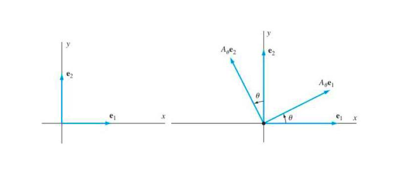
basis: {Aθe1,Aθe2}
subspace: V=αAθe1+βAθe2
projection: (α=VTAθe1β=VTAθe2)
正交基底
一組彼此正交的向量集必定是線性獨立的，但是線性獨立未必正交。-- 基底一定是正交嗎？
基底中的向量彼此互相正交(內積為0)，ViTVj=0,i = j
正則基底
該基底是正交基底且長度均為1
ViTVj={1,i=j0,i = j
使用基底表示向量
假設用 ß={V1,V2,...,Vk} 表示向量 u
當 ß 是正交基底：
u=projection scalar∣∣V1∣∣2u⋅V1V1+∣∣V2∣∣2u⋅V2V2+...+∣∣Vk∣∣2u⋅VkVk
projection scalar: u 投影到 normalize 後的 Vi 所產生的投影量
u⋅Vi=ViT⋅u
當 ß 是正則基底：
u=(u⋅V1)V1+(u⋅V2)V2+...+(u⋅Vk)Vk
複數型向量
共軛轉置(hermitian conjugate): 取共軛並轉置
V1=[a+jbc+jd],V1H=[a−jb,c−jd]
當 ß 是正交基底：
u=∣∣V1∣∣22V1H⋅uV1+∣∣V2∣∣22V2H⋅uV2+...+∣∣Vk∣∣22VkH⋅uVk
把 projection scalar 視為一個一個的變量 Ci，於是式子就變成：
u=C1V1+C2V2+...+CkVk
Ci=∣∣Vi∣∣22ViH⋅u
∣∣Vi∣∣2 – two-norms
當 ß 是正則基底：
u=(V1H⋅u)V1+(V2H⋅u)V2+...+(VkH⋅u)Vk
連續時間向量
假設用 ß={... g−1(t),g0(t),g1(t) ...} 表示向量 f(t)
且 ß 為正交基底 (兩兩積分一段週期為0)
f(t)=...+C−1g−1(t)+C0g0(t)+...
Ci 在 discrete-time 為內積，在 continuous-time 為積分，廣義的內積：
Ci=∫t∣gi(t)∣2dt∫tgi∗(t)f(t)dt
傅立葉表示法
有 4 種傅立葉表示方式：
|
Discrete-Time |
Continuous-Time |
| periodic |
Discrete-Time Fourier Series |
Fourier Series |
| non-periodic |
Discrete-Time Fourier Transform |
Fourier Transform |
時域與頻域的關係：
| Time-domain |
Freqency-domain |
Explain |
| discrete |
periodic |
Sampling |
| continuous |
non-periodic |
|
| periodic |
discrete |
很好想像 |
| non-periodic |
continuous |
|
DTFS
DTFS Pair{Time: discrete, periodic(n,Ω)Frequency: periodic, discrete(kΩ0)Sinusoid: ejkΩ0n,Ω0=N2π
因為 Frequency 為 discrete 且 periodic，所以我們可以將 x[n] 用 N 個 complex sinusoids 疊加組合而成 (詳見訊號表示法)：
x[n]=k=0∑N−1X[k]ejkΩ0n
是不是有點眼熟？再回去看看使用基底表示複數型向量中提到的：
u=C1V1+C2V2+...+CkVk
觀察一下上式後發現這個一個向量一個向量加起來的形式，很像上面求和 ∑ 的式子！其中 projection scalar 就是我們感興趣的 X[k]
Ci=∣∣Vi∣∣22ViH⋅u
然後我們就發現了一件事：我們可以把 ejkΩ0n 看成是一個基底，之後再將 x[n] 投影到基底上，如此變可以求得 X[k] 了！
首先，將 ejkΩ0n 看成是基底：
⎩⎪⎪⎪⎪⎪⎪⎪⎨⎪⎪⎪⎪⎪⎪⎪⎧n=0n=1⋮n=N−1k=0⎣⎢⎢⎢⎡11⋮1⎦⎥⎥⎥⎤V0k=1⎣⎢⎢⎢⎡ejΩ00ejΩ01⋮ejΩ0k⎦⎥⎥⎥⎤V1.........k=N−1⎣⎢⎢⎢⎡ej(N−1)Ω00ej(N−1)Ω01⋮ej(N−1)Ω0k⎦⎥⎥⎥⎤VN−1⎭⎪⎪⎪⎪⎪⎪⎪⎬⎪⎪⎪⎪⎪⎪⎪⎫N×N
而且這個基底還是正交基底，證明如下：
VlHVm=n=0∑N−1e−jlΩ0nejmΩ0n=n=0∑N−1ej(m−l)N2πn=⎩⎨⎧1−ej(m−l)N2π1−ej(m−l)N2πN=0N,l = m,l=m
同時可以得到 2-norms 值，∣∣Vk∣∣22=N
把 x[n] 也寫成向量的形式：
x=⎣⎢⎢⎢⎡x[0]x[1]⋮x[N−1]⎦⎥⎥⎥⎤
之後把 x 投影到基底上：
X[k]=∣∣Vk∣∣22VkH⋅x=N1n=0∑N−1x[n]e−jkΩ0n
可以發現有一個 nomarlization factor N 以及 sinusoid 上有一個負號(因為 hermitian conjugate)
到此我們變找到了 DTFS Pair：
x[n]=k=0∑N−1X[k]ejkΩ0nDTFSX[k]=N1n=0∑N−1x[n]e−jkΩ0n
Normalization factor
為了證明 normalization factor，我們要證明 x[n′]=IDTFS{DTFS{x[n]}}：
IDTFS{DTFS{x[n]}}=IDTFS{N1n=0∑N−1x[n]e−jkΩ0n}=k=0∑N−1N1n=0∑N−1x[n]e−jkΩ0nejkΩ0n′=N1n=0∑N−1x[n]k=0∑N−1e−jkΩ0(n−n′)=⎩⎨⎧N1∑n=0N−1x[n]1−e−jN2π(n−n′)1−e−jNN2π(n−n′)=0N1x[n′]N=x[n′],n = n′,n=n′
若要反求 normalization factor，可以將 N1 設成任意未知數，帶入上方的證明，並令結果 x[n′]=x[n] 即可求得
FS
FS Pair{Time: continuous, periodic(t,w)Frequency: non-periodic, discrete(kw0)Sinusoid: ejkw0t,w0=T2π
因為 Frequency 為 discrete 且 non-periodic，所以我們要用所有 complex sinusoids 疊加才能組成 x(t)：
x(t)=k=−∞∑∞X[k]ejkw0t
將 {ejkw0}k=−∞∞ 視為正交基底
證明，任取兩個向量積分一段週期為0：
∫tejk1w0te−jk2w0tdt=∫tejw0t(k1−k2)dt={j(k1−k2)2πTej(k1−k2)T2πT=0∫t=0T1dt=T,k1 = k2,k1=k2
同時可以得到 normalization factor 為 T
把 x(t) 投影到基底可以得到 X[k]：
x(t)=k=−∞∑∞X[k]ejkw0tFSX[k]=T1∫0Tx(t)e−jkw0tdt
Trigonometric Fourier Series:
x(t)=DC TermB[0]+k=1∑∞B[k]cos(kw0t)+A[k]sin(kw0t)
DTFT
DTFT Pair{Time: discrete, non-periodic(n,Ω)Frequency: periodic, continuousSinusoid: ejΩn
投影的技巧與 normalization factor 證明手法與前面相同，這邊省略
x[n]=2π1∫02πX(ejΩ)ejΩndΩDTFTX(ejΩ)=n=−∞∑∞x[n]e−jΩn
FT
FT Pair{Time: continuous, non-periodic(t,w)Frequency: non-periodic, continuousSinusoid: ejwt
x(t)=2π1∫−∞∞X(jw)ejwtdwFTX(jw)=∫−∞∞x(t)e−jwtdt
Examples
DTFS
Periodic signal
Q: 求 X[k] ?
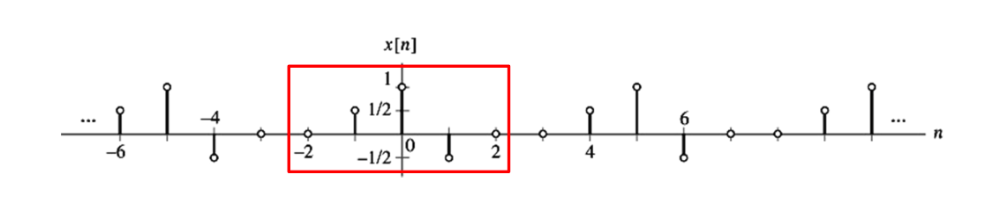
週期: 5
X[k]=51−2∑2x[n]e−jk52πn=51(1+21ejk52π−21e−jk52π)=51(1+jsin(k52π))
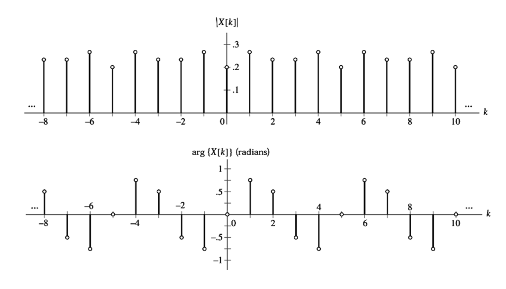
Sinusoid
Q: 求 x[n]=cos(n3π+ϕ) 的 DTFS？
週期: 3π
根據尤拉公式，可以把 x[n] 看成：
x[n]=2ej(n3π+ϕ)+e−j(n3π+ϕ)=21e−jϕe−j3πn+21ejϕe−j3πn
根據 DTFS 的定義：
x[n]=k=−2∑3X[k]ejkπ3n
可以發現
X[−1]ejπ3n=21e−jϕe−j3πn
X[1]ejπ3n=21ejϕe−j3πn
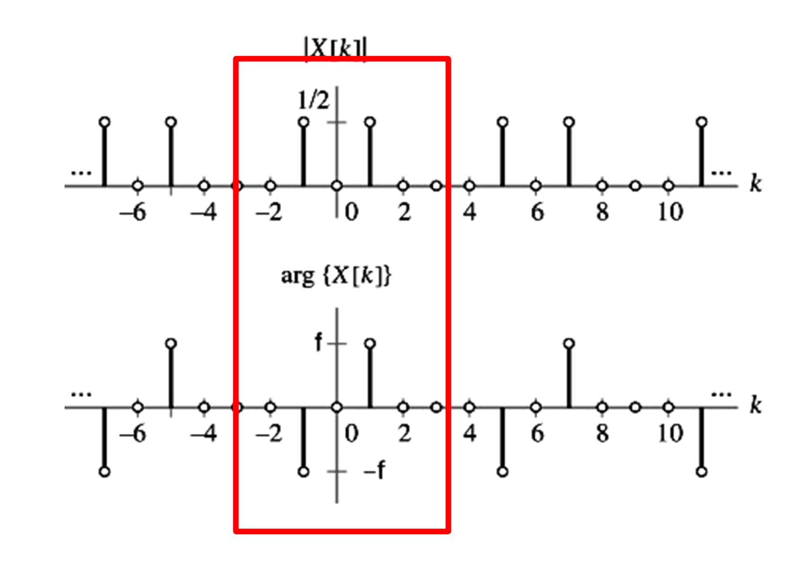
x[n]DTFSX[k]=⎩⎪⎨⎪⎧e2−jϕe2jϕ0,k=−1,k=1,otherwise on−2≤k≤3
Impulse Train
Q: 求 x[n]=∑l=−∞∞δ[n−Nl] 的 DTFS？
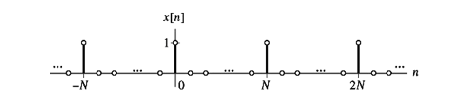
X[k]=N1n=0∑N−1δ[n]e−jknN2π=N1
因為 delta function 變化太大，所以所有頻率都要有值才能表示出 x[n]
Square Wave
x[n]={10,−M≤n≤M,M<n<N−M
Q: 求 X[k]？
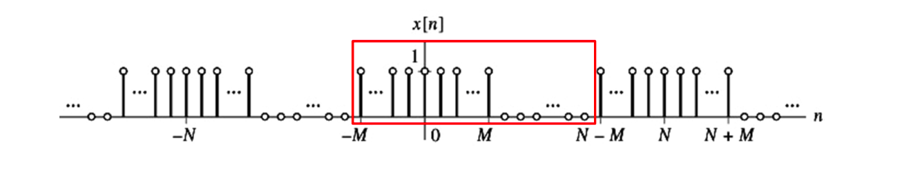
Ω0=N2π
X[k]=N1n=−M∑N−M−1x[n]e−jkΩ0n=N1n=−M∑Me−jkΩ0n=N1m=0∑2Me−jkΩ0(m−M)=N1ejkΩ0Mm=0∑2Me−jkΩ0m
若 k 為 N 的整數倍：
X[k]=N1m=0∑2M1=N2M+1
若 k 不為 N 的整數倍：
X[k]=NejkΩ0M(1−e−jkΩ01−e−jkΩ0(2M+1))=N1(ejkΩ0/2ejkΩ0(2M+1)/2)(1−e−jkΩ01−e−jkΩ0(2M+1))=N1(ejkΩ0/2−e−jkΩ0/2ejkΩ0(2M+1)/2−e−jkΩ0(2M+1)/2)=N1sin(kΩ0/2)sin(kΩ0(2M+1)/2)
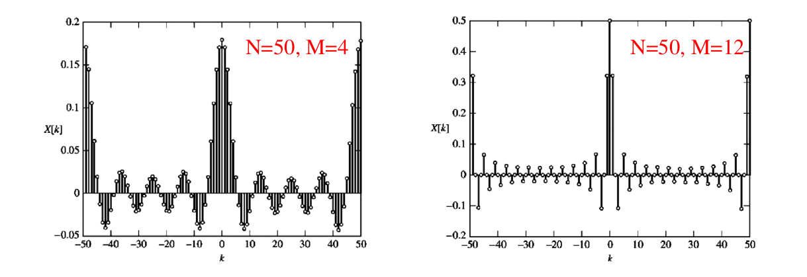
用 cos 來組合方波，把 DTFS 的式子改寫回 cos 的形式，假設 N 都是偶數：
x[n]=k=−N/2+1∑N/2X[k]ejkΩ0n=X[0]+X[N/2]ejNΩ0n/2+m=1∑N/2−1(X[m]ejmΩ0n+X[−m]e−jmΩ0n)=X[0]+X[N/2]ejπn+m=1∑N/2−12X[m](2ejmΩ0n+e−jmΩ0n)=X[0]+X[N/2]cos(πn)+m=1∑N/2−12X[m]cos(mΩ0n)=k=0∑N/2B[k]cos(kΩ0n),B[k]={X[k]2X[k],k=0,N/2,k=1,2,...,N/2−1
x^j[n]=k=0∑JB[k]cos(kΩ0n)
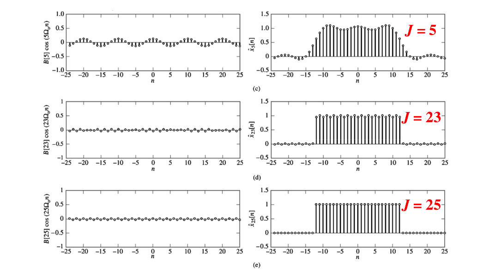
FS
Periodic signal
Q: 求 X[k] ?
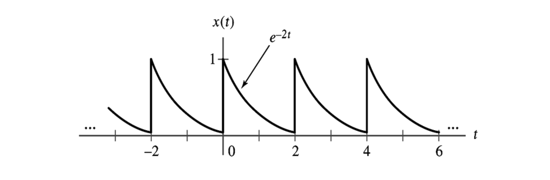
週期：2
基頻：w0=2π/2=π
X[k]=21∫02e−2te−jkπtdt=21∫02e−(2+jkπ)tdt=4+jk2π1−e−4
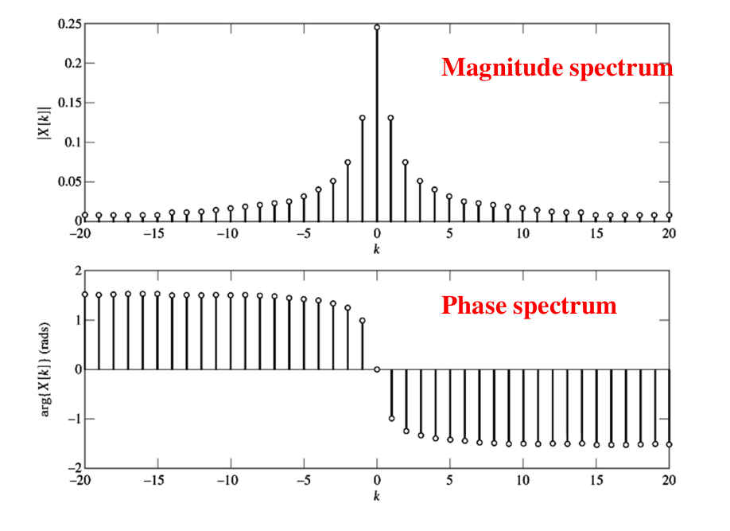
Impulse Train
Q: 求 x(t)=∑l=−∞∞δ(t−4l) 的 FS？
週期：4
基頻：w0=2π/4=π/2
X[k]=41∫−22δ(t)e−jk2πtdt=41
Square Wave
Q: 求 X[k] ?
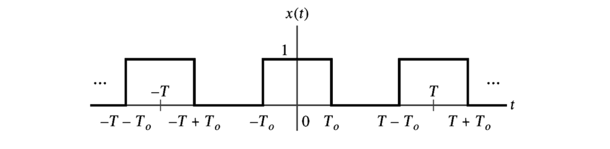
週期：T
基頻：w0=2π/T
X[k]=T1∫−T/2T/2x(t)e−jkw0tdt=T1∫−T0T0e−jkw0tdt=Tjkw0−1e−jkw0t∣−T0T0,k = 0=Tkw02(2jejkw0T0−e−jkw0T0),k = 0=Tkw02sin(kw0T0),k = 0
For k = 0, X[0]=T1∫−T0T0dt=T2T0
k=0 的 case 用羅必達也能得到相同的結果，所以 X[k]=Tkw02sin(kw0T0)
在這邊我們定義 sinc(u)=πusin(πu)，所以 X[k]=T2T0sinc(kT2T0)
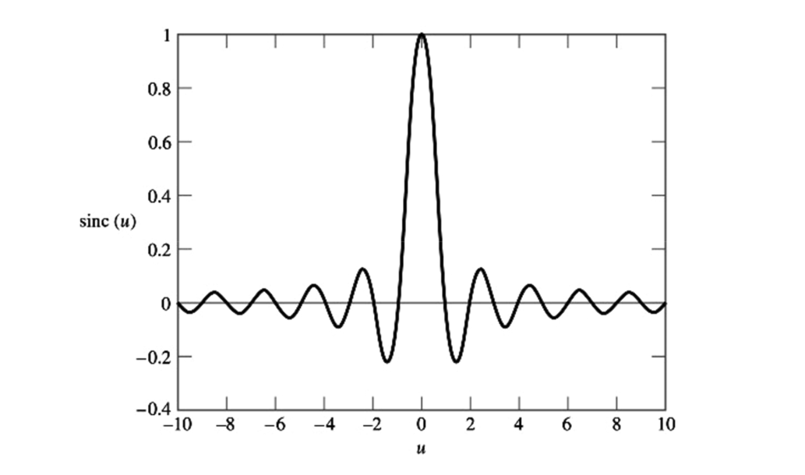
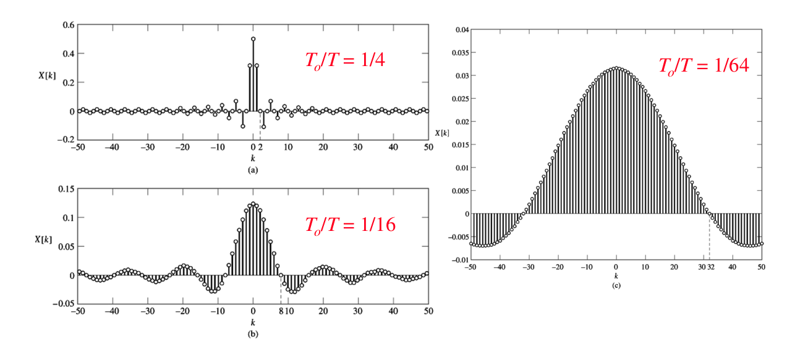
若要組合回原本的波形，用 Trigonometric FS 觀察 X[k] 各項的貢獻：
x(t)=B[0]+k=1∑∞B[k]cos(kw0t)+A[k]sin(kw0t)
因為 x(t) 是偶函數，所以 A[k] 為 0，因此式子變成：
x(t)=B[0]+k=1∑∞B[k]cos(kw0t)
因為 B[0] 也滿足 B[k]：
x(t)=k=0∑∞B[k]cos(kw0t)
但現實中不可能有無限大的項，所以我們改寫上界為：
x(t)=k=0∑JB[k]cos(kw0t)
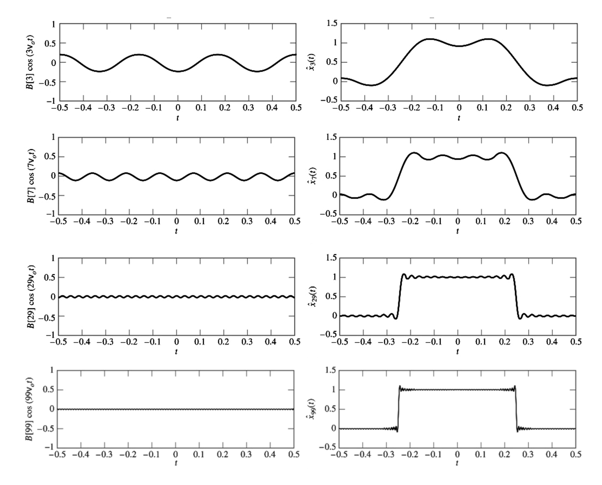
觀察上圖，當 J = 99 時，仍無法完美的表示方波，方波兩端有 Overshot
RC Circuit
Q: 求 y(t) 的 FS？
我們已經有系統的 Frequency Response 以及輸入訊號的 FS
根據訊號表示法討論出來的結果：Y(jwk)=X(jwk)H(jwk)，我們可以知道在 FS 中：Y[k]=H(jkw0)X[k]
假設 RC=0.1,w0=2π,T0/T=1/4：
Y[k]=j2πk+1010kπsin(kπ/2)
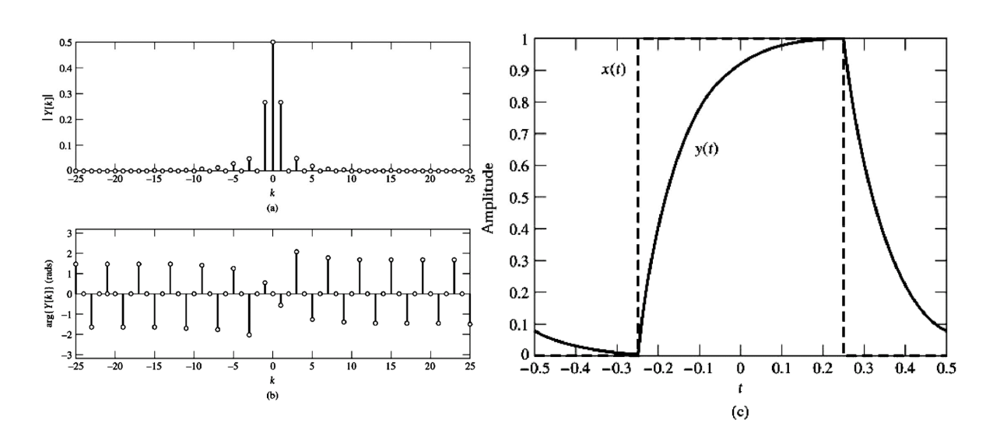
觀察左上圖，可以發現高頻都被濾掉了，因此 y(t) 是平滑的，沒有 Overshot
DTFT
Exponential Sequence
Q: 求 x[n]=αnu[n] 的 DTFT？
X(ejΩ)=n=−∞∑∞αnu[n]e−jΩn=n=0∑∞(αe−jΩ)n=1−αe−jΩ1,∣αe−jΩ∣≡∣α∣<1
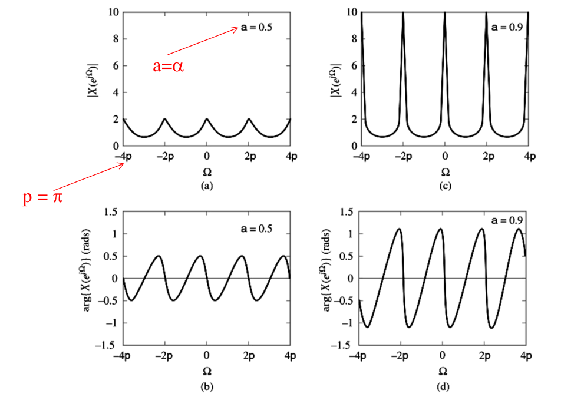
Rectangular Pulse
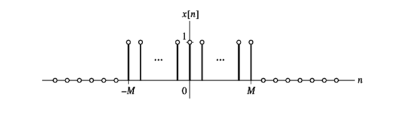
Q: 求 DTFT？
X(ejΩ)=0∑2Me−jΩ(m−M)=ejΩM0∑2Me−jΩm={ejΩM1−e−jΩ1−e−jΩ2(M+1)2M+1,Ω = 0,±2π,±4π...,Ω=0,±2π,±4π...
上式通過化簡，可以得到：
X(ejΩ)=sin(Ω/2)sin(Ω(2M+1)/2)
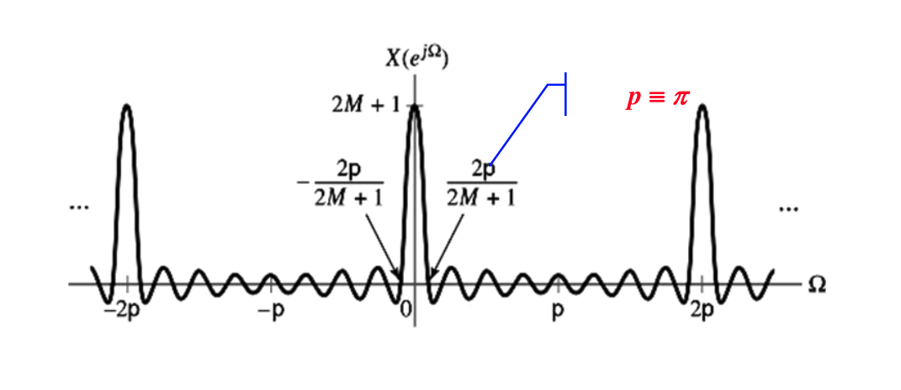
Rectangular Spectrum
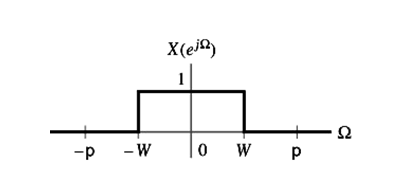
Q: 求 Invert DTFT？
x[n]=2π1∫−WWejΩndΩ=2πnj1ejΩn∣−WW=πn1sin(Wn),n = 0,n = 0
n→0limnπ1sin(Wn)=nW
轉成 sinc function 的形式，可以得到：
x[n]=πWsinc(πWn)
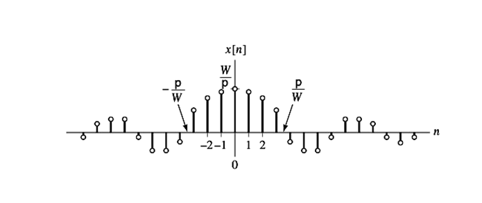
Unit Impulse
Q: 求 x[n]=δ[n] 的 DTFT？
X(ejΩ)=n=−∞∑∞δ[n]e−jΩn=1
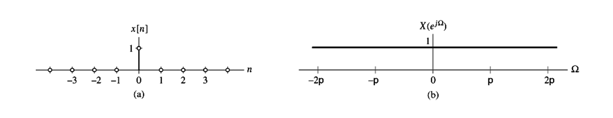
δ[n]DTFT1
Unit Impulse Spectrum
Q: 求 X(ejΩ)=δ(Ω),−π<Ω<π 的 Invert DTFT？
x[n]=2π1∫−ππδ(Ω)ejΩndΩ=2π1
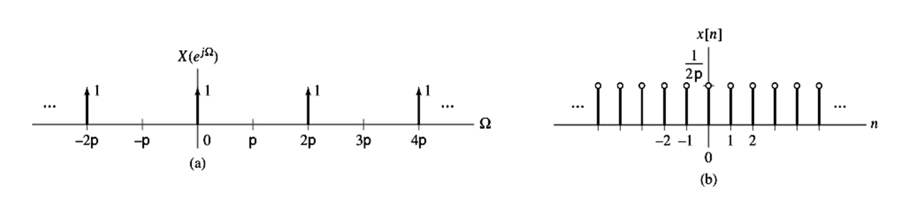
2π1DTFTδ(Ω),−π<Ω<π
FT
Real Decaying Exponential
Q: 求 x(t)=e−atu(t),a>0 的 FT？
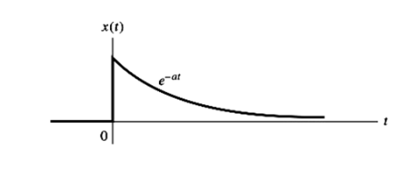
X(jw)=∫−∞∞e−atu(t)e−jwtdt=∫0∞e−(a+jw)tdt=−a+jw1e−(a+jw)t∣0∞=a+jw1
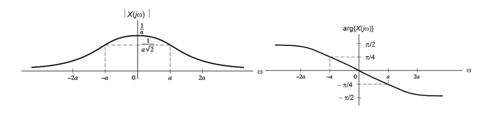
Rectangular Pulse
Q: 求 FS？
X(jw)=∫−∞∞x(t)e−jwtdt=∫−T0T0e−jwtdt=−jw1e−jwt∣−T0T0=w2sin(wT0),w = 0,w = 0
For w = 0, w→0limw2sin(wT0)=2T0
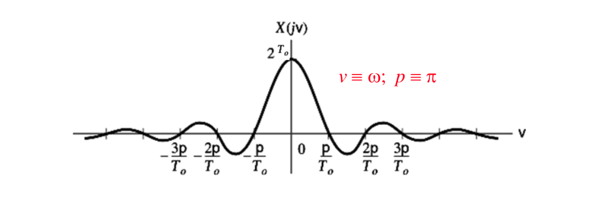
Rectangular Spectrum
Q: 求 Invert FS？
x(t)=2π1∫−WWejwtdw=−jπt1ejwt∣−WW=πt1sin(Wt),t = 0,t = 0
For t = 0, t→0limπt1sin(wT)=πW
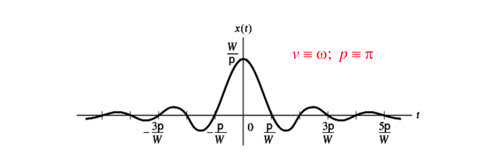
Unit Impulse
Q: 求 x(t)=δ(t) 的 FT？
X(jw)=∫−∞∞δ(t)e−jwtdt=1
δ(t)FT1
Impulse Spectrum
Q: 求 X(jw)=2πδ(w) 的 Invert FT？
x(t)=2π1∫−∞∞2πδ(w)ejwtdw=1
1FT2πδ(w)